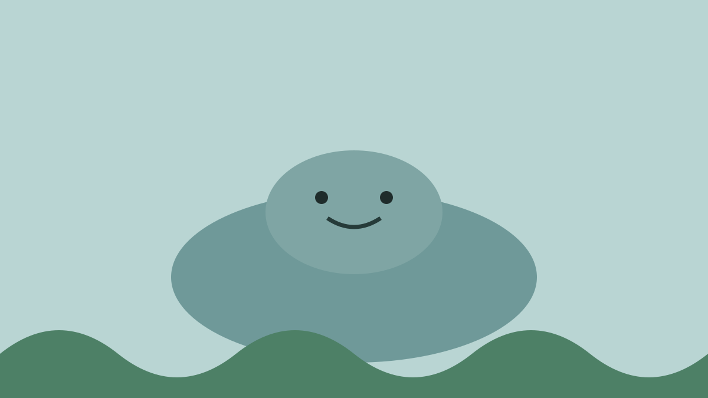
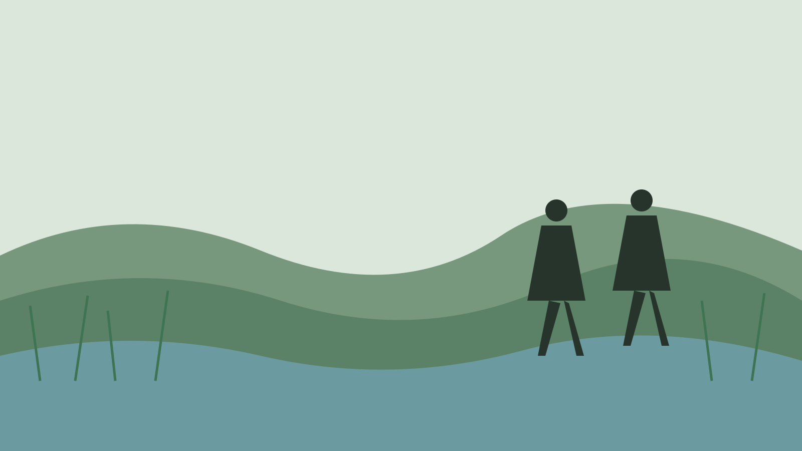
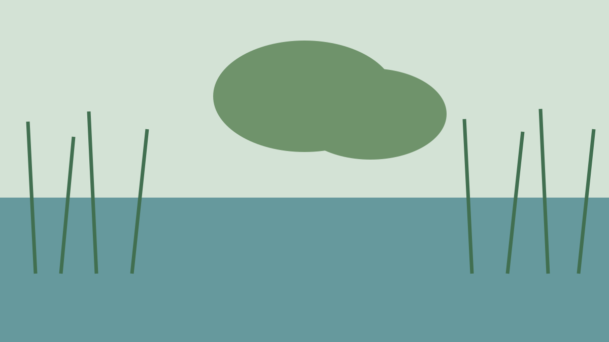
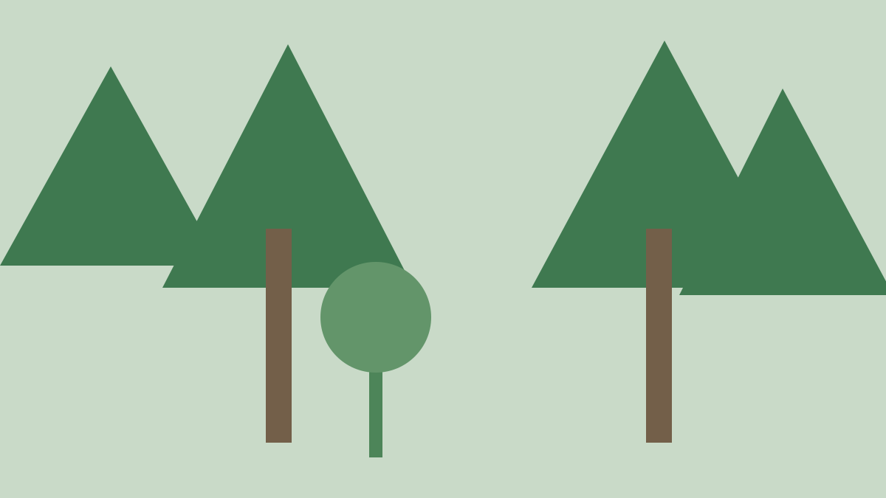
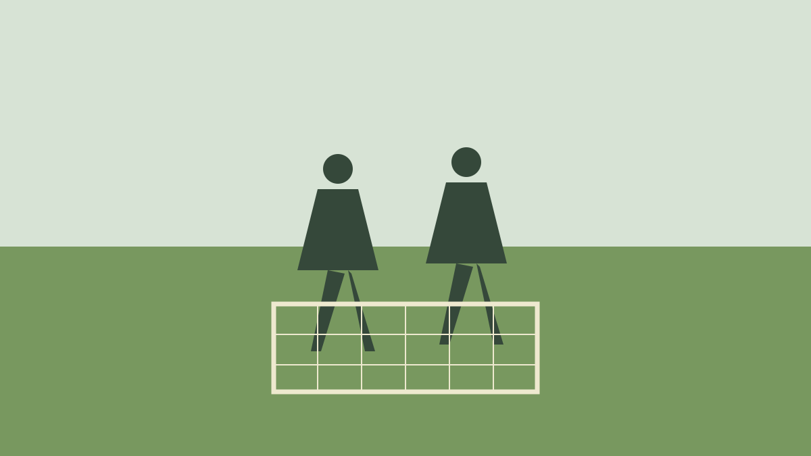

Leave It Better Than You Found It.
Go somewhere wild. Work alongside real researchers. Learn, restore, and see exactly what your visit changed.

How TerraMorrow Works
Travel with purpose.
1
Choose
Pick a real ecological restoration project.
2
Learn & Prepare
Complete short scientific learning and readiness preparation.
3
Join
Travel responsibly and work alongside researchers.
4
Make an Impact
Contribute to real restoration and collect verified data.
5
See the Change
Follow the project's progress long after you leave.
Featured Restoration Experiences
Don't just visit nature. Help restore it.

Restore Wetlands

Native Forest Restoration
Your Impact, Recorded and Verified
Your contribution doesn't disappear when your trip ends.
Project NetworkIn development
Prototype Participants—
Habitat Contributed—
Impact Records—
Not Just Travel
A different relationship with nature.
Typical Tourism
- Observe from a distance
- Limited understanding
- Short-term footprint
- Memories fade
With TerraMorrow
- Active participation
- Learn from researchers
- Measurable positive impact
- Lasting connection
For Universities & Research Projects
Bring people into real restoration work — without turning research into tourism theatre.
TerraMorrow does not invent restoration projects. We connect suitable university-led or research-supported projects with participants who want to learn, contribute and understand the science behind the work.
Research-ledThe institution remains the scientific authority.
Verified participationField activity can be recorded and confirmed by the project team.
Co-branded learningProjects can become structured educational experiences with the partner institution's identity and methodology.
Pilot firstStart with one project, a small participant group and clear impact criteria before scaling.

Early Access